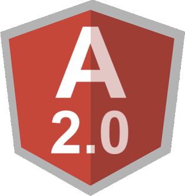

<nav class="navbar navbar-inverse navbar-fixed-top">
    <div class="container-fluid">

        <div class="navbar-header">
            <a class="navbar-brand" href="#">
                
            </a>
        </div>

        <ul class="nav navbar-nav navbar-left">
        </ul>
        <ul class="nav navbar-nav">

            <li class="active"><a href="#" (click)="openTodaysTopicList()">bugün</a></li>
            <li><a href="#" (click)="openPopularTopicList()">gündem</a></li>
            <li><a href="#" (click)="openTodayInHistoryTopicList()">tarihte bugün</a></li>
            <template ngFor let-i="index" let-c="count" let-channel [ngForOf]="channels">
                <li *ngIf="i<12"><a href="#" (click)="openChannelTopicList(channel)">{{channel.name}}</a></li>
            </template>
           

            <li dropdown><a href="#" dropdownToggle>...</a>
                <ul dropdownMenu role="menu" aria-labelledby="single-button">
                    <template ngFor let-i="index" let-c="count" let-channel [ngForOf]="channels">
                        <li *ngIf="i>12"><a href="#" (click)="openChannelTopicList(channel)">{{channel.name}}</a></li>
                    </template>
                    <li class="divider dropdown-divider"></li>
                    <li role="menuitem"><a class="dropdown-item" href="#" (click)="openDesertedTopicList()">başıboşlar</a></li>
                </ul>
            </li>
            <li><a href="#" (click)="openVideoTopicList()">video</a></li>
        </ul>
        <ul class="nav navbar-nav navbar-right">
            <li><a href="#"><span class="glyphicon glyphicon-user"></span> kayıt ol</a></li>
            <li><a href="#"><span class="glyphicon glyphicon-log-in"></span> giriş</a></li>
        </ul>
    </div>
</nav>